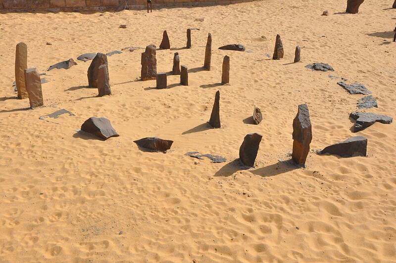

Nabta Playa
Nubian Desert, Egypt

An archaeological site by a former seasonal lake, dating to about 7500 BC. In the 5th millennium BC its people set up stone alignments, including a "calendar circle," that may be among the world's earliest archaeoastronomical devices. Pseudoarchaeologist Thomas G. Brophy suggested some stones represent the stars of Orion's Belt. 1
Open in the interactive Watcher
Sources
- Nabta Playa Wikipedia